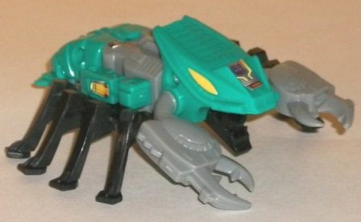 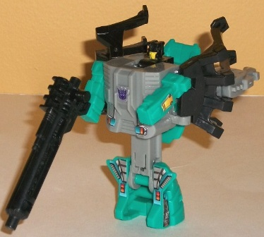
Difficulty of Transformation : Very Easy
Color Scheme : Light seafoam green, light gray, black, and some yellow
Rating : 5.7
Allegiances
: Decepticons
Set Price
: $60 (U.S.)
Difficulty of Sticker Application
:
N/A
(NOTE: Because this set is a repaint, this is not a full-blown review. This mainly covers any changes made to the molds and the color schemes, and merely compares it to the Collectors' Club Exclusive Universe Seacons. For a review on the molds themselves, read the review of the Universe Seacons here .)
 Nautilator
Nautilator
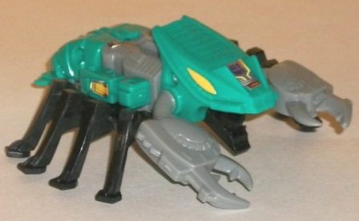
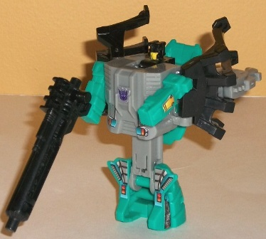
Difficulty of Transformation
: Very
Easy
Color Scheme
: Light seafoam green,
light gray, black, and some yellow
Rating
: 5.7
 Overbite
Overbite
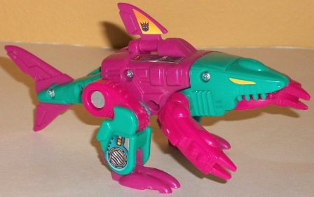
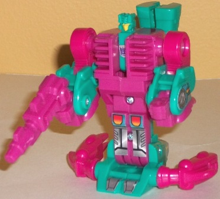
Difficulty of Transformation
: Very
Easy
Color Scheme
: Rich pink, light seafoam
green, and some yellow
Rating
: 5.0
 Seawing
Seawing
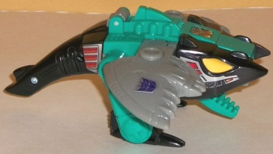
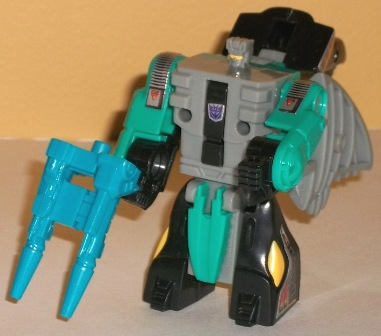
Difficulty of Transformation
: Very
Easy
Color Scheme
: Black, light gray,
light seafoam green, and some yellow
Rating
: 5.0
 Skalor
Skalor
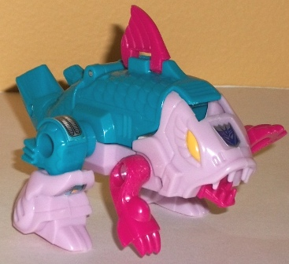
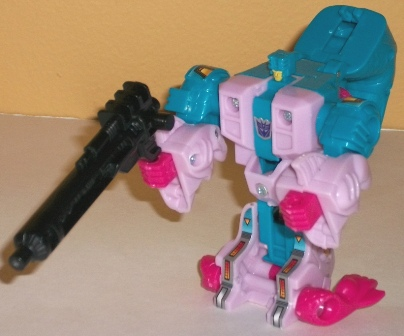
Difficulty of Transformation
: Very
Easy
Color Scheme
: Blue, light pink,
and some yellow and rich pink
Rating
: 4.9
 Snap
Trap
Snap
Trap
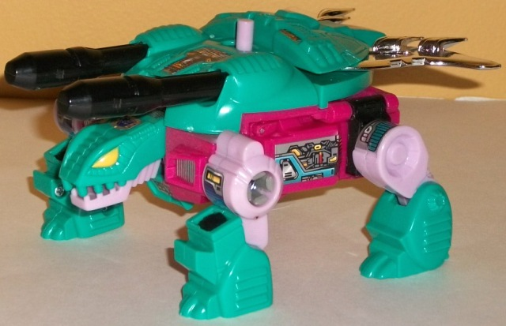
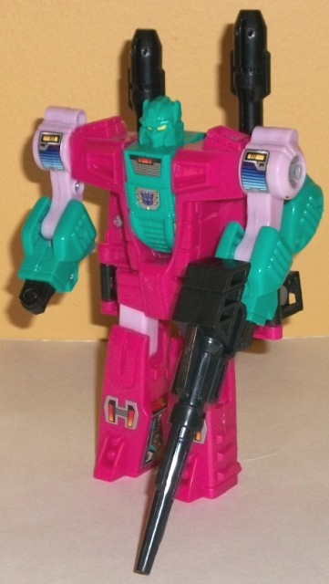
Difficulty of Transformation
: Easy
Color Scheme
: Light seafoam green,
rich pink, light pink, and some black, yellow, and chrome silver
Rating
: 6.2
 Tentakil
Tentakil
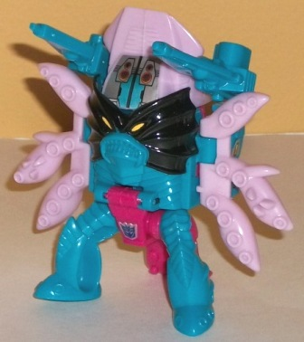
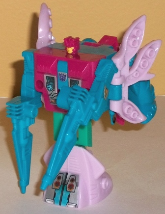
Difficulty of Transformation
: Very
Easy
Color Scheme
: Blue, rich pink, light
pink, and some yellow and black
Rating
: 5.4
 Piranacon
(Combined Form)
Piranacon
(Combined Form)
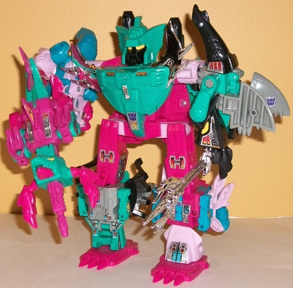
Difficulty of Transformation
: Hard
Color Scheme:
Rich pink, light pink,
light seafoam green, black, blue, light gray, and some chrome silver and
yellow
Rating
: 5.2
It's kinda weird the
way things work. I review the repaint of this figure mold and all, given
that it's the first iteration I have of it, and I'm now reviewing the original
color scheme of the figure (more or less) as a repaint. Anyways, this color
scheme certainly identifies this set as having originally come out in the
late 1980s, when Hasbro's idea of color schemes seemes to be basically
throwing dart boards at a color wheel. I will admit that overall, this
color schemes seems a bit "sea-based" but more in a colorful coral reef
kind of way. I love the seafoam green, black, and blue colors used-- they
really bring out the sea theme and are pretty palatable, to boot. Plus,
they go well with each other. The black and gray serve as nice contrast
colors, but aren't particularly exciting. I certainly prefer them to the
light and rich pink colors, though. Ick. Just... pink? Seriously? And there's
a lot of it, too-- more than on the original G1 toy, in fact. This is particularly
evident on Overbite, who has way more pink on him than the original toy
did. Because of my dislike of pink, my favorite two of these Seacons are
Nautilator and Seawing, though they don't catch the eye as pleasantly as
the Club Exclusive decos of them. The chrome silver used on the chest "wings"
and the sword is a really nice touch, though, especially since we don't
see much of that these days.
No mold changes have
been made to the G1 Piranacon reissue.
The G1 Piranacon reissue
set is probably the better way to go for most G1 collectors who don't mind
the blockiness of the original toys, despite my misgivings about his odd
and overly pink color scheme. Yes, I think every individual component,
and the combined form, looks worse than the Club Exclusive deco job and
has less color variation-- but the latter is also a LOT more expensive,
especially if you're looking for it on the secondary market. The G1 Piranacon
reissue set here goes for a VERY reasonable price, and as of this writing
is on discount at Bigbadtoystore.com for even less. Plus, the stickers
are pre-applied-- a big plus-- and he comes with some very nice collector
cards.
Review by Beastbot
(NOTE: This toy comes with all the accessories-- and all components are capable of all the modes that the Club Exclusive version can do-- but pics of some components and the Targetmaster modes are left out for web space considerations.)